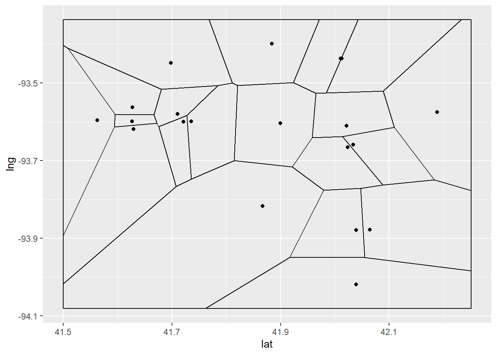
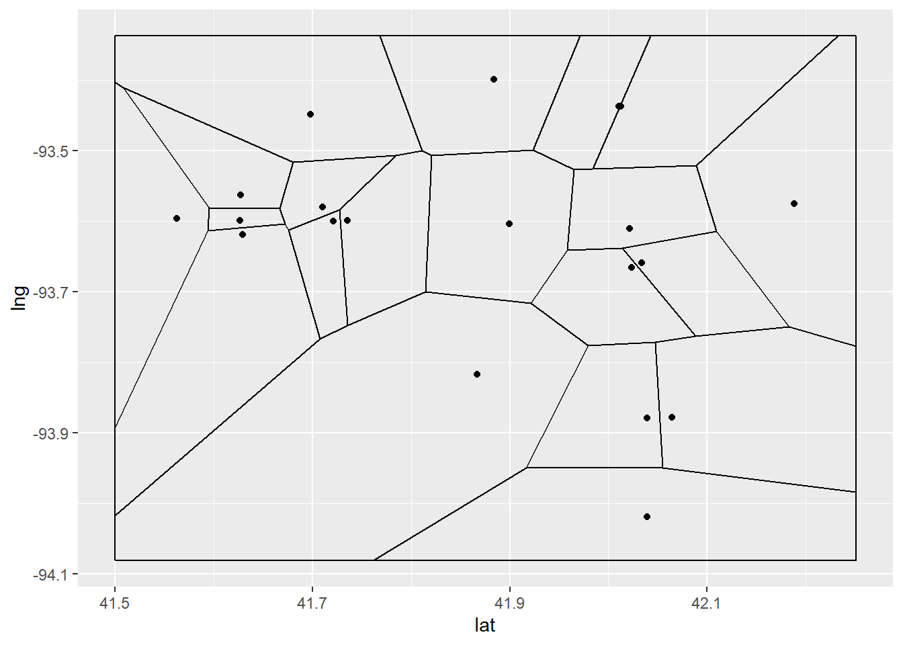

ggplot(spatial_results, aes(lat, lng)) +
stat_voronoi(geom = "path") +
geom_point(mapping = aes(lat, lng))
Voronoi Diagrams are ways to visualize the regions on a map that are the closest to a given node.

ggplot(spatial_results, aes(lat, lng)) +
stat_voronoi(geom = "path") +
geom_point(mapping = aes(lat, lng))
Old Method

We looked into the economic methods for evaluating market size. Two metrics we looked into were Reilly’s Law of Gravitation and Trade Area Capture. Reilly’s law is based on the idea people will tend to shop in areas with a higher population, and the model is based on a ratio between distance and population. Trade area capture uses historical data and income in areas to give a prediction of actual numbers of people who shop in an area.
Voronoi and Reilly’s law can tell us similar, but different things. Voronoi shows the geographic regions where our proposed store would be the closest. Reilly’s law would show the regions around our store that people would be willing to travel in order to shop at the store.
This week Aaron worked on creating a function that takes latitude and longitude as inputs and outputs the corresponding Census geographies. So far, we have two: one that’s simple and one that is more complex. We are currently working on adjusting them and improving their performance, as well as figuring out how this function fits into the full patchwork of functions for our tool.
get_census_geos <- function(longitude, latitude) {
address <- revgeo::revgeo(longitude = longitude, latitude = latitude,
provider = 'google', output = "frame",
API = Sys.getenv("PLACES_KEY"))
city <- address$city
state <- address$state
state_ab <- state.abb[match(state,state.name)]
# set options
options(tigris_class = "sf") # use sf objects
options(tigris_use_cache = TRUE) # cache downloaded files
# get shapefiles for places in state
places <- tigris::places(state = state_ab, cb = TRUE)
# get shapefiles for counties in state
counties <- tigris::counties(state = state_ab, cb = TRUE)
# join places with counties with st_join
city_county <- sf::st_join(places, counties, join = sf::st_within)
# filter places by city name
city_county_frame <- city_county |> dplyr::filter(NAME.x == city) |> dplyr::select(NAMELSAD.y)
county <- city_county_frame$NAMELSAD.y[1]
# county passed to TidyCensus
census <- tidycensus::get_decennial(
geography = "block",
variables = "P2_002N",
county = county,
state = state_ab,
year = 2020,
geometry = TRUE)
census
}knitr::kable(block_table[1:5,])| GEOID | NAME | variable | value | geometry |
|---|---|---|---|---|
| 191279503001019 | Block 1019, Block Group 1, Census Tract 9503, Marshall County, Iowa | P2_002N | 0 | POLYGON ((-93.029 42.02367,… |
| 191279502002006 | Block 2006, Block Group 2, Census Tract 9502, Marshall County, Iowa | P2_002N | 0 | POLYGON ((-93.11787 42.2077… |
| 191279501002009 | Block 2009, Block Group 2, Census Tract 9501, Marshall County, Iowa | P2_002N | 0 | POLYGON ((-93.04905 42.1297… |
| 191279502002135 | Block 2135, Block Group 2, Census Tract 9502, Marshall County, Iowa | P2_002N | 0 | POLYGON ((-93.13204 42.1058… |
| 191279503004007 | Block 4007, Block Group 4, Census Tract 9503, Marshall County, Iowa | P2_002N | 0 | POLYGON ((-92.98028 41.9495… |

places_multiloc_pull <- function(df, name = NULL,
search_string = NULL,
keyword = NULL,
lat = c(df[,2]),
lng = df[,3],
radius = 6500,
type = NULL,
api_key = Sys.getenv("PLACES_KEY"),
place_type = NULL) {
result_list <- list()
for (i in 1:dim(test_cities)[1]) {
start_time <- Sys.time()
string <- sprintf("df_%f", i)
spring <- noquote(string)
spring <- googleway::google_places(search_string = search_string,
name = name,
location = c(lat[i], lng[i]),
radius = radius,
keyword = keyword,
key = api_key)
Sys.sleep(2)
result_list <- append(result_list, list(spring$results))
end_time <- Sys.time()
total_time <- end_time - start_time
print(sprintf("Execution time for iteration %d is %.2f", i, total_time))
}
return(result_list)
}Duane Johnson, our client, stopped by East Hall Wednesday to answer key questions about our project. I had questions about the source of of some of the figures on the excel sheet that I had been working with, as well as questions regarding the extent our functions should take user input. After Duane answered our questions, the path has become much clearer regarding how to move forward with our project and what our final tool might look like.
One of my questions was about the depreciation sheet that was given to us. We asked whether or not we should provide default values for the assets listed in the calculation sheet in the case that the user did not know these values up front. Duane assured us that these can be purely user inputs and that we should not worry about default values.
Another question concerned the meaning of some of the line items on the sheet, such as “Operating Income (Loss)”. We were told that this represented an interim result in the calculation sheet and that this value is not to be forwarded to any other function. Rather, it is there to help us understand the progression of the calculation of pre-tax profit up until that point.
Finally, I asked about the final table on our recently updated excel sheet, which contained unseen columns such as “adv”, “repairs” and “tax”. Duane told us that this table represented the breakdown of the “Other Operating Expenses” line item on the sheet that we were familiar with. These are just a portion of the questions that were answered in regard to the Estimating Expenses excel sheet. I found our meeting to be highly productive and I have a much clearer idea of the big picture now.
Understood why the 2 methods were tried by the client to calculate the per capita grocery spending and planned to go with the simpler one moving forward. Got some clarity about the percent price increase and state index value used in Estimating revenue sheet. So we will use the consumer price index for the percent price increase and rural price parities as the state index as per our discussion with the client.
I discussed my findings of the week with Duane, and explained the Voronoi diagrams and Reilly’s law.
Next week I plan on looking into how we can incorporate Voronoi diagrams into our leaflet map. The ggvoronoi package we are using does not save a geometry, so we will have to look into how we can map that. I also want to figure out if I can make a map using the Reilly’s law, because as is it will just give a single distance as an output.